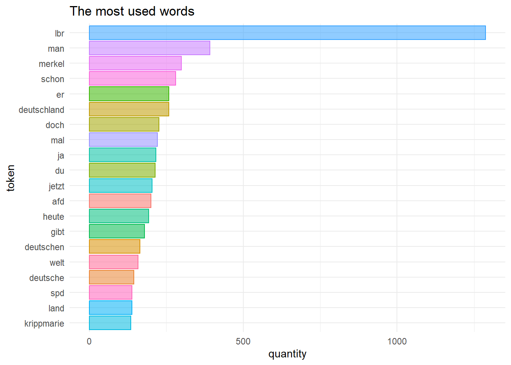

library(tidyverse)
library(rio)
library(tidymodels)
library(tidytext)
library(textrecipes)
library(lsa)
library(discrim)
library(naivebayes)
library(tictoc)
library(fastrtext)
library(remoji)
library(tokenizers)1. Preliminary note
For this analysis we use the dataset from Wiegand (2019a) out of the zip archive Wiegand (2019b). The data are licensed according to Attribution 4.0 International (CC-BY-4.0).
The used wordembeddings are from Grave et al. (2018). The data are licensed according to Attribution-ShareAlike 3.0 Unported (CC-BY-SA 3.0).
The picture, that is used is from Altmann (n.d.).
2. Load the packages
3. Load dataset and minor changes
Train dataset
d_train <- read_tsv("C:/Users/sapi-/OneDrive/Studium/5. Semester/Data Science II/Data_Science_Blog/daten/germeval2018.training.txt", col_names = FALSE)Rename columns
names(d_train) <- c("text", "c1", "c2")Add ID column
d_train <- d_train %>%
mutate(id = row_number()) %>%
select(id, everything())Test dataset
d_test <- read_tsv("C:/Users/sapi-/OneDrive/Studium/5. Semester/Data Science II/Data_Science_Blog/daten/germeval2018.test.txt", col_names = FALSE)Rename columns
names(d_test) <- c("text", "c1", "c2")Add ID column
d_test <- d_test %>%
mutate(id = row_number()) %>%
select(id, everything())4. Explore dataset
train_toc <- d_train %>%
unnest_tokens(output = token, input = text)
train_toc# A tibble: 100,217 x 4
id c1 c2 token
<int> <chr> <chr> <chr>
1 1 OTHER OTHER corinnamilborn
2 1 OTHER OTHER liebe
3 1 OTHER OTHER corinna
4 1 OTHER OTHER wir
5 1 OTHER OTHER würden
6 1 OTHER OTHER dich
7 1 OTHER OTHER gerne
8 1 OTHER OTHER als
9 1 OTHER OTHER moderatorin
10 1 OTHER OTHER für
# ... with 100,207 more rowsFirst we tokenize the dataset d_train.
Insert stopwords_de
data(stopwords_de, package = "lsa")
stopwords_de <- tibble(word = stopwords_de)
stopwords_de <- stopwords_de %>%
rename(token = word)After that we use the stopwords_de to
anti_jointhis with train_toc.
train_toc2 <- train_toc %>%
anti_join(stopwords_de)Joining, by = "token"Show the important words
train_toc2 <- train_toc2 %>%
count(token, sort = TRUE) Plot
train_toc2 %>%
slice_head(n=20) %>%
ggplot()+
aes(y=reorder(factor(token), n), x = n, color = token)+
geom_col(aes(fill = token, alpha = 2.5)) +
ggtitle("The most used words") +
ylab("token")+
xlab("quantity")+
theme_minimal()+
theme(legend.position = "none")
References
Altmann, Gerd. n.d. https://pixabay.com/de/illustrations/transformation-netz-gehirn-netzwerk-7691355/.
Grave, Edouard, Piotr Bojanowski, Prakhar Gupta, Armand Joulin, and Tomas Mikolov. 2018. “Learning Word Vectors for 157 Languages.” In Proceedings of the International Conference on Language Resources and Evaluation (LREC 2018). https://doi.org/10.48550/arXiv.1802.06893.
Wiegand, Michael. 2019a. “GermEval-2018 Corpus (DE).” heiDATA. https://doi.org/10.11588/data/0B5VML.
———. 2019b. “GermEval-2018-Data-Master.zip.” In GermEval-2018 Corpus (DE). heiDATA. https://doi.org/10.11588/data/0B5VML/XIUWJ7.